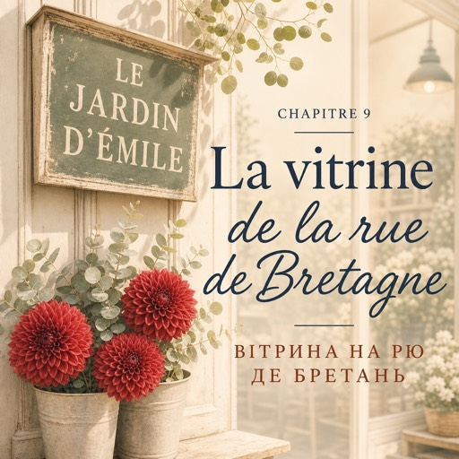

0:00
2:30
Натисніть речення, щоб почути його окремо.
Щоб слухати з підсвіткою — відкрийте сторінку в браузері.
Le vendredi 12 septembre — п'ятниця, 12 вересня
Le troisième entretien dure onze minutes. Un supermarché, rue du Temple.
Третя співбесіда триває одинадцять хвилин. Супермаркет на вулиці Тампль.
Le monsieur est poli. Très poli.
Пан ввічливий. Дуже ввічливий.
— Votre profil est intéressant. Mais.
— Ваше резюме цікаве. Але.
Natalia connaît ce « mais » maintenant. Il arrive toujours à la même place.
Наталя вже знає це «але». Воно завжди приходить на тому самому місці.
Dehors, il fait beau. Elle ne prend pas le métro. Elle marche.
Надворі гарна погода. Вона не йде в метро. Вона йде пішки.
Rue de Bretagne, il y a des seaux d'eau directement sur le trottoir, avec des fleurs dedans.
На вулиці Бретань просто на тротуарі стоять відра з водою, а в них квіти.
Une enseigne verte, la peinture un peu partie : LE JARDIN D'ÉMILE.
Зелена вивіска, фарба трохи облізла: LE JARDIN D'ÉMILE.
Dans la vitrine, personne n'a rien arrangé. Les fleurs sont juste là, et c'est très joli.
У вітрині ніхто нічого не викладав. Квіти просто стоять — і це дуже гарно.
Elle entre. Juste pour que la journée ne soit pas complètement mauvaise.
Вона заходить. Просто щоб день не був цілком поганим.
Dedans, il fait frais. L'odeur, c'est l'eau, les tiges coupées et un peu l'eucalyptus.
Усередині прохолодно. Пахне водою, зрізаними стеблами і трохи евкаліптом.
Une radio parle tout bas.
Десь тихо говорить радіо.
— Bonjour !
— Добрий день!
La femme a soixante-huit ans, une natte grise, une chemise d'homme et des lunettes au bout d'une chaîne.
Жінці шістдесят вісім, сива коса, чоловіча сорочка й окуляри на ланцюжку.
— Bonjour. Je voudrais des tulipes, s'il vous plaît.
— Добрий день. Я хотіла б тюльпани, будь ласка.
— En septembre ?
— У вересні?
— Les tulipes, c'est en mars, madame. Ici, on vend les fleurs de la saison. Prenez des dahlias.
— Тюльпани — це березень, пані. Тут продають квіти за сезоном. Візьміть жоржини.
Elle sort trois dahlias rouge sombre de son seau.
Вона дістає з відра три темно-червоні жоржини.
— C'est pour offrir ?
— Це в подарунок?
— Non. C'est pour moi.
— Ні. Це для себе.
La femme la regarde une seconde de plus.
Жінка дивиться на неї на секунду довше.
— C'est la meilleure raison.
— Це найкраща причина.
Elle cherche du papier et donne les fleurs à Natalia.
Вона шукає папір і віддає квіти Наталі.
— Tenez-moi ça.
— Потримайте.
Et Natalia, sans réfléchir, tourne les tiges dans sa main, enlève deux feuilles basses et remonte une fleur un peu plus haut.
І Наталя, не думаючи, повертає стебла в руці, знімає два нижні листки й піднімає одну квітку трохи вище.
Le silence dure trois secondes.
Тиша триває три секунди.
— Vous savez tenir un sécateur ?
— Ви вмієте тримати секатор?
— ... Oui. J'ai étudié les jardins. À Kyiv. Je n'ai pas fini.
— …Так. Я вчилася на сади. У Києві. Я не довчилася.
— Je ne sais pas dire ça en français.
— Я не вмію сказати це французькою.
— Vous parlez mal français.
— Ви погано говорите французькою.
— Ça, ça vient. Les mains, ça ne vient pas.
— Це прийде. А руки не приходять.
Elle pose le bouquet sur le comptoir.
Вона кладе букет на прилавок.
— Lundi. Huit heures et quart.
— У понеділок. О чверть на дев'яту.
— C'est un vrai métier, madame, on verra si ça vous plaît. Vous avez un tablier ?
— Це справжнє ремесло, пані, побачимо, чи вам сподобається. У вас є фартух?
Dans la rue, Natalia s'arrête et regarde ses mains.
На вулиці Наталя зупиняється й дивиться на свої руки.
Personne ne lui a demandé son niveau de français. On lui a demandé ses mains.
Ніхто не спитав про її рівень французької. У неї спитали про руки.
Puis elle écrit trois mots à Oksana.
Потім вона пише Оксані три слова.
Tu avais raison.
Твоя правда.